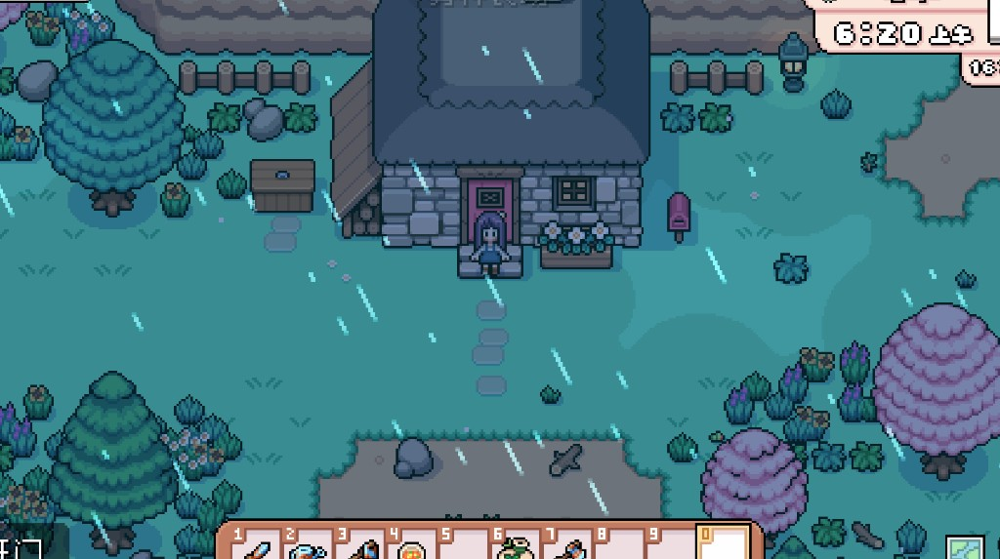
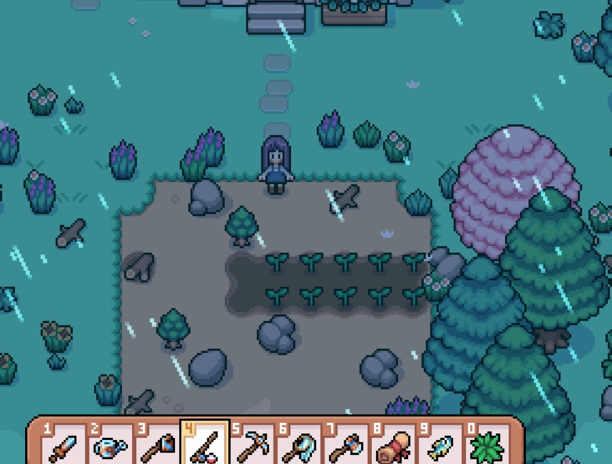

Quick answers
- Do not water by muscle memory in the rain.
- Choose mines, fishing, or farm clearing.
- Pack food—rain does not fill your stomach.
- Town errands and museums fit wet days.
- Still sleep on time.
Pick one
Our best rainy days were either a short mine scouting trip or dock fishing—not both plus a renovation.
Wet town days
Museum donates, board turn-ins, and inn visits feel natural when the farm is already watered by weather.
Safe to skip
- Forcing sunny-day crop expansion in mud
- Skipping snacks because “no watering”
Screenshots from our save
Real Fields of Mistria shots from our first-season play. Captions in English; in-game UI language may differ.




FAQ
Indoor plants?
Follow your game’s rules; outdoor is the big rain gift.
Thunder fear?
Stay in town or house if you prefer calm.
Unofficial fan guide. Not affiliated with NPC Studio. Verify details in your game version.